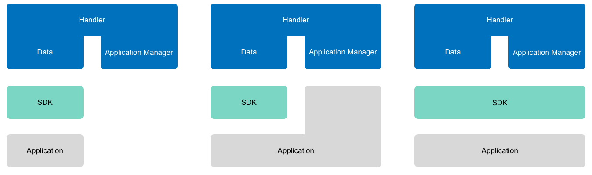

Build a Platform Integration
An application can integrate The Things Network in different ways. This guide lays out the different options and documents how to build an integration for your platform.
Contact johan@thethingsnetwork.org for more information.
Integration Options
An application can integrate The Things Network in different ways:
1. APIs
In the most basic scenario, the application uses standard protocol libraries to connect directly to The Things Network’s Handler APIs:

Data API
The Data API allow you to receive events and messages from devices as well as send messages to devices. You can use the Data API via:
- MQTT
- AMQP (coming)
Application Manager API
The Application Manager API let you manage applications and devices registered to it. You can use the Data API via:
- gRPC (to be documented)
- HTTP
2. SDK
We intend to SDKs for popular platforms such as Node.js and Java. These SDKs provide a layer of abstraction to make it easier to interact with the APIs:

SDKs may not wrap all available APIs.
If you’d like to contribute to a SDK, contact fokke@thethingsnetwork.org.
3. HTTP Integration
Some platforms do not allow users to run code. Good examples are IFTTT and Zapier. For these situations we provide an HTTP Integration which acts as a bridge between the Handler Data API and HTTP.
Simply configure it with HTTP requests to forward device messages and events to. It also provides you with a unique HTTP endpoint to send messages to devices.

For some platforms we provide a configuration template. Instead of directly configuring the HTTP requests, we ask you only for variables like a platform key and generate the configuration for you.
If you’d like to see a configuration template for your platform, contact johan@thethingsnetwork.org.
4. Platform Integration
The most advanced way is a Platform Integration. An integration uses the same APIs or SDKs an application could use directly. Together with the private or public APIs of the platform it ties up the application running on the platform with The Things Network:

Platform Integrations can completely hide the user from any code and even The Things Network Console or CLI. A good example is an integration for Azure IoT Hub or Amazon IoT, where the user could manage his application and devices from there, while the integration takes care of synchronizing with The Things Network.
Building the Integration
Building a Platform Integration is not much different from building an application. It uses the same Handler Data and Application Manager APIs or SDK.
But now, the user’s application lives on your platform and the integration uses our APIs and the private or public APIs of your platform to tie them together.
Here’s an example architecture for a typical integration:

This example uses one of our SDKs for the Data API while talking directly to the Application Manager API. As you can see it also uses the Account Server API to exchange the Access Key it is provisioned with for an Access Token. This improves the performance and stability of the Application Manager API.
See the API References for more information. Each reference also lists the available SDKs that include the API.
Hosting the integration
Of course you can choose to host the Platform Integration yourself. You will have full control over the architecture and won’t have to share the code with us.
However, if you choose to host the Platform Integration with us, then users will see it listed in The Things Network Console and can configure and deploy it with the click of a button.
Contact johan@thethingsnetwork.org if you are interested.
Requirements
You can host your platform integration on The Things Network Integration Platform under the following conditions:
- You must share the source code with us, either public or private.
- The configuration must be done via environment variables.
- The service must meet our standards for efficiency and stability.
One container per application
For each hosted integration a user selects for his or her application we spin up a new container. The container will be provisioned with the generic image of your integration and the application-specific configuration, via environment variables.
Environment Variables
Each container is provisioned with 3 groups of environment variables:
- Integration-specific generic variables like your API endpoint.
- Application-specific system variables like the application ID, Key and Access Key the integration was activated for.
- Application-specific user variables like his or her key for your API.
When you decide to host your integration with us we will ask you for these variables. For the user variables we also require descriptions to go with the form we will present to the user.
API References
For a complete reference of all related APIs see:
- Handler Data MQTT and AMQP API (coming)
- Handler Application Manager APIs
- Account Server API